X2055–X2119¶
Orion Transforms, Circumcircle Inverses, PK/NK Transforms, Reflections & Kepler Points
X2055–X2119 (Orion Transforms, Circumcircle Inverses, PK/NK Transforms, Reflections & Kepler Points) — 16 representative centers (from 65 in collection) constructed on acute reference triangle \((a, b, c) = (5, 6, 7)\) with unit baseline AB = \(1\).¶
Group Preamble — Orion Transforms, 2055 -2065
On September 24, 2003, Jean-Pierre Ehrmann suggested in Hyacinthos 7999 a transformation: suppose P =\(x : y : z\) (trilinears); the Orion transform of P is given by OT(P) =\(f(a,b,c) : f(b,c,a) : f(c,a,b)\), where
\(f(a,b,c) = x[- y^{2}z^{2} + x^{2}(y^{2} + z^{2} + 2yz \cos A)]\).
Among pairs (i,j) for which OT(Xj) = Xi are these:
(1,35), (2,69), (4,24), (7,57), (99,249), (100,59), (110,250)
Ehrmann’s construction of OT(P) is as the perspector of triangles ABC and A″B″C″, where A″ is the reflection of P in the sideline B'C' of the cevian triangle A'B'C' of P, and B″ and C' are defined cyclically. Alternative and related constructions are given in other Hyacinthos messages prompted by #7999.
Group Preamble — Inverses in Circumcircle, 2070 -2080
Suppose X is a point in the plane of triangle ABC, other than the circumcenter O and not on the line at infinity. The inverse-in-circumcircle of X is the point X' on ray OX whose distance from O is \(R^{2}\)/|OX|2. In normalized trilinears, if
X = (x, y, z) O = (\(x_{3}\), \(y_{3}\), \(z_{3})\), R = circumradius,
then X' is given as (f(a,b,c), f(b,c,a), f(c,a,b)) by \(f(a,b,c) = x_{3} + (x - x_{3})(R/\)|OX|)2.
In this section, representations using the circumradius R, inradius r, Brocard angle ω and J as defined at X1113, were contributed by Peter J. C . Moses.
Group Preamble — PK and NK Transforms, 2081 - 2088
On October 1, 2003, Bernard Gibert described two transforms, given for X =\(u : v : w\) (barycentrics) by
PK(X) = \(a^{2}(c^{2}v^{2} - b^{2}w^{2})\)u : \(b^{2}(a^{2}w^{2} - c^{2}u^{2})\)v : \(c^{2}(b^{2}u^{2} - a^{2}v^{2})\)w;
NK(X) = \(a^{2}(c^{2}v^{2} + b^{2}w^{2})\)u : \(b^{2}(a^{2}w^{2} + c^{2}u^{2})\)v : \(c^{2}(b^{2}u^{2} + a^{2}v^{2})\)w.
Let \(X ^{-1}\) denote the isogonal conjugate of X. Then PK(X) is the point of intersection of the trilinear polar of X and the trilinear polar of \(X ^{-1}\), and NK(P) is the pole of the line \(XX ^{-1}\) with respect to the conic that passes through points A, B, C, X, and \(X ^{-1}\).
Also, PK(X) is the crossdifference, and NK(X) the crosssum, of X and \(X ^{-1}\).
The transform PK carries any point on the cubic pK(X6,X) to the trilinear polar of \(X ^{-1}\), and NK carries any point on the cubic nK0(X6,X) to the trilinear polar of \(X ^{-1}\). (The notations for these cubics are given at Bernard Gibert’s Cubics in the Triangle Plane.)
In trilinears: suppose X =\(x : y : z\); then
PK(X) = (\(y^{2}\) - \(z^{2})\)x : (\(z^{2}\) - \(x^{2})\)y : (\(x^{2}\) - \(y^{2})\)z;
NK(X) = (\(y^{2}\) + \(z^{2})\)x : (\(z^{2}\) + \(x^{2})\)y : (\(x^{2}\) + \(y^{2})\)z.
The self-isogonal cubic pK(X6,X) is denoted as Z(X) in TCCT (p. 240), and nK0(K6,X), as \(Z^{+}(L)\). Extending examples on p. 240-241,
Additional pass-through points for these and other cubics are given at Bernard Gibert’s Cubics in the Triangle Plane.
Group Preamble — Reflections, 2093 - 2105
Suppose X =\(x : y : z\) and U =\(u : v : w\) (trilinears). Then the reflection of X in U is the point
(au - bv - cw)x + 2u(by + cz) : (bv - cw - au)y + 2v(cz + ax) : (cw - au - bv)z + 2w(ax + by).
Thus, if x = x(a,b,c), y = x(b,c,a), z = x(c,a,b) and u = u(a,b,c), v = u(b,c,a), w = u(c,a,b), then the reflection of X in U is given by \(f(a,b,c) : f(b,c,a) : f(c,a,b)\), where \(f(a,b,c) = (au - bv - cw)x + 2u(by + cz)\).
In this section, several coordinate representations were contributed by Peter J. C . Moses.
Group Preamble — Centers 2106 -2119 (points on the 2nd equal-areas cubic, EAC2)
are on the 2nd equal-areas cubic, EAC2. (For the definition, click Tables and then Bicentric Pairs.)
For any point P on EAC2, the X2-isoconjugate of P is also on EAC2. In the following table, for each (i,j), the centers Xi and Xj are on EAC2 and are an X2-isoconjugate pair. Each pair are collinear with the pivot X238.
I J 1 6 2 31 105 672 238 292 365 365 1423 2053 1931 2054 2106 2107 2108 2109 2110 2111 2112 2113 2114 2115 2116 2117 2118 2119 2144 2145 2146 2147 3009 20332
Triangle centers on a cubic yield non-central points on the cubic; e.g., if P and P' are on EAC2, then the line of PP' meets EAC2 in third point, L(P,P'), on EAC2. (Possibly L(P,P') is P or P'.) If A', B', C' are central triangle vertices and X is a triangle center, and all four points A', B', C', and X lie on EAC2, then the points
L(A',X), L(B',X), L(C',X)
are central triangle vertices on EAC2. (A definition of central triangle is given in the Glossary.) In the following table, column 1 indicates the A-vertex of such a triangle; column 2 two points collinear with that vertex; and column 3, the A-vertex of the X2-isoconjugate of the triangle. Taking row 1 as an example, - a : c : represents the point \(-a : c : b\), which is the A-vertex of the central triangle with B-vertex \(c : - b : a\) and C-vertex \(b : a : - c\). The A-vertex is collinear with A and X2 (so that the B-vertex is collinear with B and X2, etc.). Then, in column 3, - bc : \(a^{2}\)b : represents the A-vertex of the X2-isoconjugate of - a : c : . The vertices - a : c : and - bc : \(a^{2}\)b : are collinear with the pivot, X238.
X2055ORION TRANSFORM OF X3
X2056ORION TRANSFORM OF X6
X2057ORION TRANSFORM OF X8
X2060ORION TRANSFORM OF X20
As a point on the Euler line, X2060 has Shinagawa coefficients \((4(E - 2F)F - S^{2},8F^{2})\).
X2065ORION TRANSFORM OF X98
X2066POINT CAROLI I
X2067POINT CAROLI II

X2070INVERSE-IN-CIRCUMCIRCLE OF X5
X2071INVERSE-IN-CIRCUMCIRCLE OF X20
X2072INVERSE-IN-CIRCUMCIRCLE OF X26
X2073INVERSE-IN-CIRCUMCIRCLE OF X27
X2074INVERSE-IN-CIRCUMCIRCLE OF X28
X2075INVERSE-IN-CIRCUMCIRCLE OF X29
X2076INVERSE-IN-CIRCUMCIRCLE OF X39

X2077INVERSE-IN-CIRCUMCIRCLE OF X40
X2078INVERSE-IN-CIRCUMCIRCLE OF X57
X2079INVERSE-IN-CIRCUMCIRCLE OF X115
